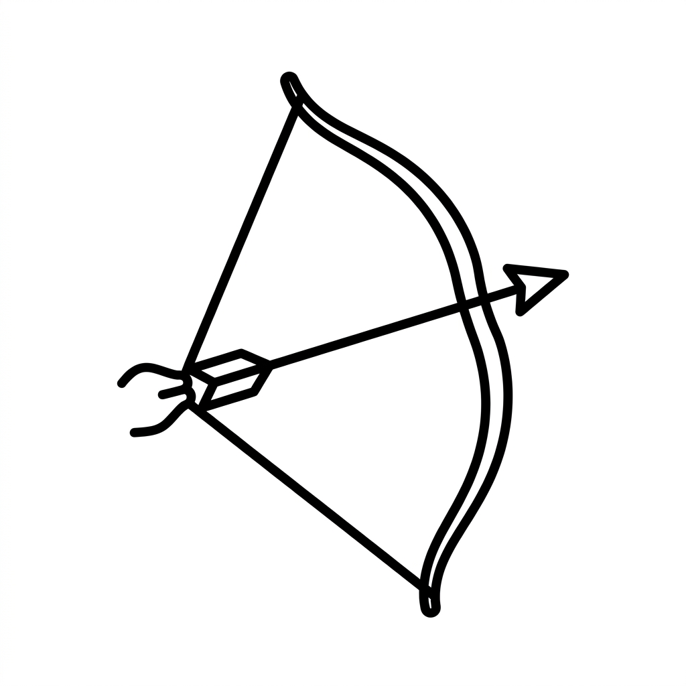
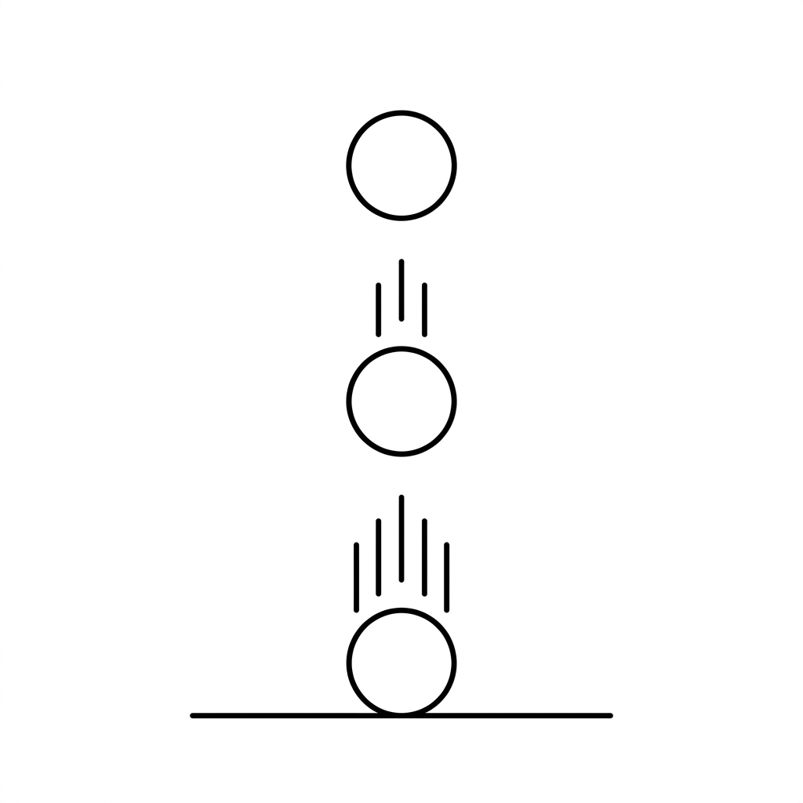
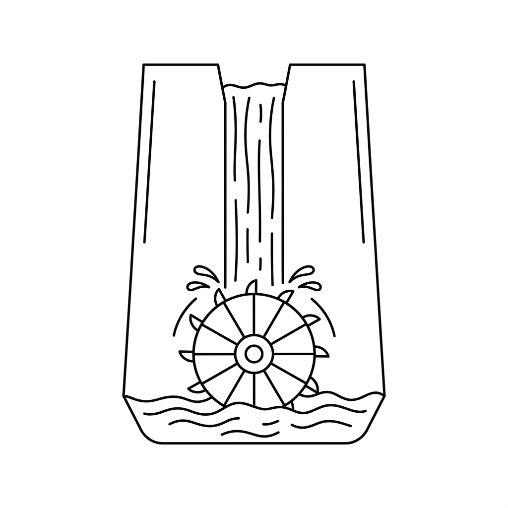

Vardaan Learning Institute
Class 7 Physics • Chapter Notes
🌐 vardaanlearning.com
📞 9508841336
ENERGY
Whenever a force is applied to a stationary body and it moves, work is said to be done by the force on the body. The work done is measured as the product of the force and the distance moved in the direction of the force. However, to do work, a body needs Energy.
Concept
Energy: Energy is defined as the capacity (or ability) to do work.
When work is done on a body, its energy increases. When work is done by a body, its energy decreases.
Units of Energy
Because energy is the capacity to do work, it is measured in the same units as work.
Important
- S.I. Unit: The S.I. unit of energy is the joule (J).
- 1 Joule: One joule of work is done when a force of 1 newton moves a body by 1 metre in the direction of the force.
- Other Units: Energy is also measured in calorie (cal), where 1 cal = 4.2 J (nearly). A bigger unit is the kilo-calorie (kcal), where 1 kcal = 1000 cal.
1. Different Forms of Energy
In nature, energy exists in various different forms, each with unique properties and uses:
- Mechanical Energy: The energy possessed by a body due to its state of rest or state of motion.
- Heat Energy: The energy released when things like coal, wood, or gas burn. James Watt invented the steam engine utilizing the heat energy of steam.
- Light Energy: The energy that allows us to see objects. Plants use light energy for photosynthesis.
- Chemical Energy: The energy possessed by fuels (petrol, coal) and the food we eat.
- Sound Energy: Energy possessed by a vibrating body. Humans can hear sounds when vibrations are between 20 to 20,000 per second.
- Magnetic Energy: The energy possessed by a magnet that allows it to attract iron. Electromagnets are used in factories to lift heavy iron objects.
- Electrical Energy: Energy obtained from batteries or generators, used to run appliances.
- Atomic / Nuclear Energy: The immense energy stored in atoms, released when a heavy nucleus splits or two light nuclei combine.
Fact
The Sun is the major source of energy for the Earth. The energy we receive from the sun is called solar energy, which is now heavily used to power solar panels and cookers.
2. Two Forms of Mechanical Energy
Mechanical energy is broadly divided into two specific forms:
I. Potential Energy (P.E. or U)

Definition: Potential energy is the energy possessed by a body due to its state of rest or position. It is equal to the work done in bringing the body to that state.
II. Kinetic Energy (K.E. or K)
Definition: Kinetic energy is the energy possessed by a body due to its state of motion.
Examples:
- A fast-moving stone breaking a window pane.
- A falling hammer striking a nail.
- A swinging pendulum moving to and fro.
- A bullet fired from a gun.
Factors affecting Kinetic Energy:
- Mass of the body: Greater mass = higher kinetic energy.
- Speed of the body: Higher speed = higher kinetic energy.
3. Transformation of Energy
Energy rarely stays in one form; it constantly converts from one form to another. This is known as the Transformation of Energy.
- Steam Engine: Chemical energy (coal) → Heat energy (steam) → Mechanical energy (movement).
- Electric Motor / Fan: Electrical energy → Mechanical energy.
- Electric Iron / Heater: Electrical energy → Heat energy.
- Dry Cell (Battery): Chemical energy → Electrical energy.
- Loudspeaker: Electrical energy → Sound energy.
- Microphone: Sound energy → Electrical energy.
- Photosynthesis: Light energy → Chemical energy (food).
- Bursting Firecrackers: Chemical energy → Heat, Light, and Sound energy.
Important
Dissipation of Energy: During the transformation of energy from one useful form to another, a part of the energy is often converted into a non-useful form (like heat due to friction). This is called dissipation of energy, but the total sum of energy always remains the same.
4. Law of Conservation of Energy

This is one of the most fundamental laws in physics.
5. Production of Hydroelectricity

The energy possessed by flowing water is called hydro energy. The most common use of this is generating electricity.